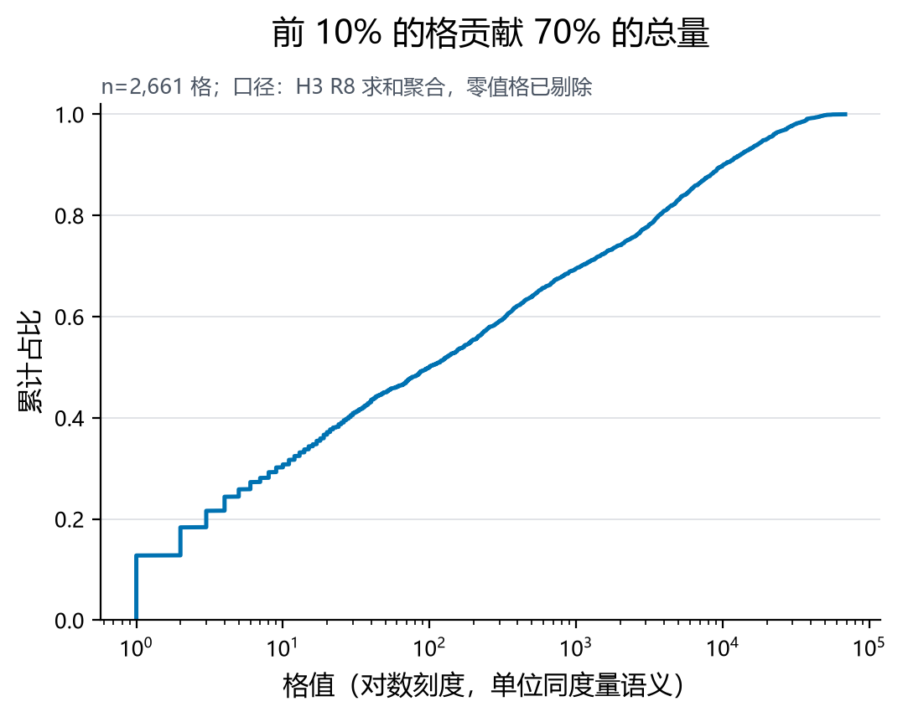
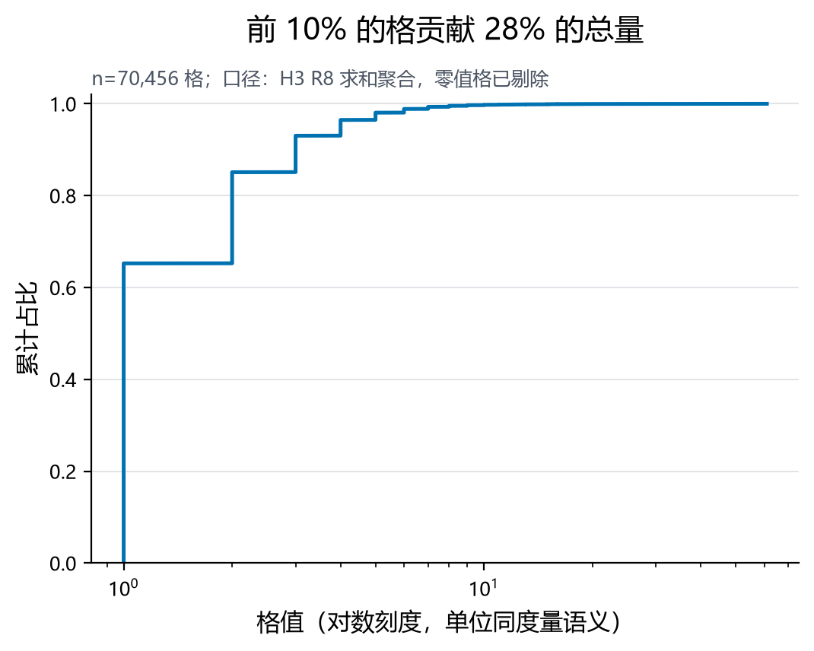

L0 → L3
四阶认知阶梯
一套流程跑通四个数据集。
核心命题只有一句：「邻居」怎么定义，决定你能看到什么结论。
生成时间 2026-09-10 12:35 | 键盘 ←/→ 翻页，按
/ 搜索怎么读这本书
这本电子书是给第一次接触空间分析的人写的。它不像教科书那样先讲定义， 而是按「一条流水线」往下走：每一步都回答为什么要做这一步、做完能看见什么。
建议路线
三种读法
引言 → L1 → L2 → 常见误区 → 结论。只想拿走一句话的话： I 低先看孤岛率，别急着说没有空间效应。
按目录顺序读完 15 页，每章做一次章内交互，最后自测。
直接跳到「可复现」页，按 version_lock.json 里冻结的
参数与库版本重跑一遍。
导航
- 左右箭头按钮，或键盘
←→翻页；Home/End到首尾。 - 左侧目录常驻、当前页高亮；按
/聚焦搜索框，输入关键词直接跳页。 - 右上角
☾ / ☀切深色模式（投影用深色，自己看用浅色）。 - 读到的位置会记住，下次打开自动回到这一页。
为什么要给数据加一个空间维度
- 空间数据为什么不满足独立性假设
- 这条四步流水线每一步在解决什么问题
- 四个数据集的空间结构差异有多大
如果只把数据当「一行行记录」，你会漏掉一件事： 它们彼此之间有位置关系。
深圳单车的起终点挤在同一座城市，Brightkite 的签到散落全球 —— 同样是「计数」，在不同的空间结构里，含义完全不同。 传统统计假设样本相互独立，而空间数据天然不独立：近的东西更像。
本教程的四步流水线
四个数据集，四种空间结构
| 数据集 | 场景 | 格数 | 每格点数 | 平均邻居 | 孤岛率 | Moran's I |
|---|---|---|---|---|---|---|
| FDIC 网点关闭 | 全美 · 稀疏 | 70,456 | 2.1 | 1.41 | 28.1% | 0.1331 |
| 深圳共享单车 | 同城 · 极密 | 2,661 | 3221.5 | 5.07 | 4.5% | 0.7077 |
| Brightkite 签到 | 全球 · 稀疏 | 228,476 | 20.8 | 2.01 | 29.4% | 0.0132 |
| Gowalla 签到 | 全球 · 中等 | 302,580 | 21.3 | 2.40 | 21.8% | 0.5090 |
注意 每格点数 这一列： 深圳单车 每格 3,222 个点， FDIC 只有 2 个 —— 差 1532 倍。 后面所有结论的差异，地基都在这里。
把点装进 H3 六边形格
- H3 六边形网格为什么比方格好用
- 分辨率（res）怎么选、选错的后果
- 格值分布的长尾特性
点太密、太乱，先离散化：把每个点的经纬度映射到 Uber H3 的 R8 六边形（平均 0.737 km²/格），格内求和得到「格值」。 这一步把「点云」变成「栅格」。
为什么是六边形
每个格有 6 个共享边的邻居，方向统一、距离一致， 没有「对角算不算邻居」的歧义。
4 邻（共享边）还是 8 邻（含对角）？选哪个都会改变结果， 而且说不清为什么。
分辨率是第一个关键决策
res 每 +1，格面积约 ÷7；每 −1，约 ×7
分辨率太大（格太小）→ 一格一个点，邻居全是孤岛，权重矩阵搭不起来； 分辨率太小（格太大）→ 空间细节被抹平，全图糊成几块。 没有标准答案，只有业务口径：你关心的现象在多大的尺度上发生？
格值长什么样


两条曲线都说明同一件事：格值是长尾的，少数格贡献了大部分量。 这直接决定了 L2 的取舍 —— 在长尾原始数据上算 Moran's I，结果会被极端格主导。
h3_res 会被冻结进 version_lock.json —— 因为改它必须重跑整条链。定义「谁是邻居」
- W 有哪几种定义方式、各自代价
- 行标准化到底在抹平什么
- 孤岛为什么是 I 的头号杀手
空间权重矩阵 W 是空间分析里最主观、最影响结论的一步。
它回答：谁算谁的邻居？答案不是数据给的，是你定的。
邻接：H3 grid_disk(k=1)
六边形共享边即邻居，满配 6 个。实测平均邻居数从 1.41 （FDIC）到 5.07 （深圳单车）—— 差的不是算法，是数据密不密。
行标准化
空间滞后 Wx 由「邻居求和」变成「邻居均值」，与邻居数量脱钩
孤岛：一格邻居都没有
孤岛 67,189 格
占 29.4% 平均邻居 2.01
孤岛 19,786 格
占 28.1% 平均邻居 1.41
孤岛 66,069 格
占 21.8% 平均邻居 2.40
孤岛 121 格
占 4.5% 平均邻居 5.07
孤岛的滞后取 0，仍计入 I 的分母。所以孤岛越多，I 越被稀释 —— 这正是 Brightkite 的 I 只有 0.0132 的一大原因。
libpysal.weights.W 必须覆盖全部格（含孤岛），否则 w.n < n，滞后向量维度对不上，后面全线崩。空间滞后与 Moran's I
- 空间滞后 Wx 是怎么算的
- 为什么行标准化后 I 恰好等于散点斜率
- Moran 散点四象限分别代表什么
有了 W，就能算空间滞后 Wx：每个格的邻居均值。
把格值画横轴、滞后画纵轴，散点拟合线的斜率就是 Moran's I。
公式
行标准化后 S₀ = n ⇒ I = zᵀWz / zᵀz = 散点斜率
四个象限
热点，推高 I。
冷点，也推高 I。
空间离群，压低 I。
同样压低 I。
四个数据集的 I
0.1331
corr(格值,滞后) = 0.2163
0.7077
corr(格值,滞后) = 0.8581
0.0132
corr(格值,滞后) = 0.0266
0.5090
corr(格值,滞后) = 0.7246
深圳单车 的 I 是 Brightkite 的 54 倍。 教科书会说「深圳单车强聚集、Brightkite 几乎随机」，但更诚实的说法是 —— Brightkite 的 I 里，有很大一部分是「数据本来就散」造成的。
邻居换成距离环：效应怎么随距离衰减
- 距离环怎么定义、圆心怎么选
- 为什么求和口径会得到假结论
- 密度口径下的衰减速率怎么比
「谁是邻居」还可以用距离回答：以格值 Top-100 热点格为圆心 画环（0–1 km / 1–3 km / 3–5 km / 5–10 km），看环内的溢出怎么变。
本页最重要的一个坑
两种口径的完整数字
| 数据集 | 0–1 km 求和 | 1–3 km 求和 | 3–5 km 求和 | 5–10 km 求和 | 0–1 km 密度 | 1–3 km 密度 | 3–5 km 密度 | 5–10 km 密度 |
|---|---|---|---|---|---|---|---|---|
| FDIC | 42 | 32 | 42 | 129 | 8 | 2 | 2 | 2 |
| 深圳单车 | 171725 | 441273 | 604740 | 1421335 | 24612 | 15870 | 10056 | 6867 |
| Brightkite | 12442 | 9362 | 8625 | 14592 | 3006 | 342 | 148 | 65 |
| Gowalla | 27873 | 52203 | 29896 | 30652 | 4024 | 1460 | 458 | 124 |
求和口径：只有 sz_bike 随距离单调递增 —— 那是几何效应，不是业务效应。 密度口径：四个数据集全部单调递减，这才是真正的距离衰减。
衰减速度也各不相同
衰减 4.6×
8 → 2
衰减 3.6×
24612 → 6867
衰减 46.0×
3006 → 65
衰减 32.6×
4024 → 124
同一套管线，四个数据集
- 四个数据集在每一层各差多少
- 连通性与聚集强度为什么不是一回事
把 L0–L2 的指标摊在一张表上，差别一目了然。差别不在算法，在数据本身。
| 数据集 | 场景 | 格数 | 每格点数 | 平均邻居 | 孤岛率 | Moran's I |
|---|---|---|---|---|---|---|
| FDIC 网点关闭 | 全美 · 稀疏 | 70,456 | 2.1 | 1.41 | 28.1% | 0.1331 |
| 深圳共享单车 | 同城 · 极密 | 2,661 | 3221.5 | 5.07 | 4.5% | 0.7077 |
| Brightkite 签到 | 全球 · 稀疏 | 228,476 | 20.8 | 2.01 | 29.4% | 0.0132 |
| Gowalla 签到 | 全球 · 中等 | 302,580 | 21.3 | 2.40 | 21.8% | 0.5090 |
怎么看这张表
- 每格点数是最直观的密度指标，四个数据集差 1532 倍。
- 平均邻居跟着密度走：5.07 → 2.40 → 2.01 → 1.41。
- 但 I 不完全跟着平均邻居走：fdic 与 Gowalla 的孤岛率只差几个百分点， I 却差好几倍 —— 值的分布形态同样重要。
看它们怎么串成一条链
- 四层之间的依赖：为什么改上游必须重跑下游
静态图只能分别展示 L0/L1/L2/L3，看不出它们是一条链。 这段动图把「点装进格 → 定义邻居 → 算邻居均值 → 换成距离环」的递进演出来。
链条上的依赖关系
上游换一个参数，下游全部要重跑。这就是为什么可复现要冻结
h3_res，而不只是冻结数据。
七个最容易犯的错
- 七个高频错误的症状与解法
这一页把前面散落各章的坑收拢。带新人的时候，直接让他读这一页最省事。
w.n < n 会让 Wx 维度对不上，后续全线崩。孤岛滞后取 0，但仍计入分母。把这条管线用到你自己的数据上
- 自己的数据需要哪些最小字段
- 分辨率与权重该怎么选、按什么标准
- 报告里必须披露的五件事
读完前面 13 页，最后要回答的是：我的数据能不能这么跑？ 这一页给一份可直接照做的检查清单。
最小可用输入：只要三个字段
纬度，WGS84。必须落在 [-90, 90]， 但合法不等于合理（深圳数据集里出现过 47.66）。
经度，WGS84。跨 180° 经线要单独处理。
你要聚合的量。决定它是计数还是强度， 直接决定聚合函数用 sum 还是 mean。
选分辨率：问自己三个问题
- 你关心的现象发生在多大尺度上？街区级用 R9–R10，城市级 R7–R8，全国级 R5–R6。
- 你能接受多少孤岛？先按候选 res 跑一遍 L1，孤岛率 > 30% 就该调粗。
- 格数会不会撑爆内存？权重矩阵是稀疏的，但 KNN 的 KD-tree 与散点渲染都随 n 增长； 30 万格是浏览器与内存的舒适上界附近。
选权重：问自己三个问题
- 邻接还是 KNN？数据密、形状规则 → 邻接；数据稀、必须消灭孤岛 → KNN， 但要接受「邻居可能很远」。
- 孤岛留不留？留（滞后取 0，稀释 I）还是补（KNN）？ 两条路都要在报告里写明。
- 行标准化还是二值？想让 Wx 表示「邻居均值」→ 行标准化； 想保留「邻居多就是影响大」→ 二值。
报告里必须写的五件事
- 网格系统与分辨率（H3 R8）
- 权重方案与标准化方式（Queen 邻接 / 行标准化）
- 变量尺度（原始值 / log1p）
- 聚合口径（求和 / 密度 / 均值）
- 孤岛数量与占比
缺任何一条，你的 Moran's I 都无法被别人复现或比较。
上线前检查清单
结论与限制
- 四条结论各自成立的前提
- 四条限制为什么必须写进报告
结论
- 「邻居」是人为定义。换一种定义，Moran's I 就变 —— 从 0.0132 到 0.7077 的差距里，有相当部分来自权重与数据密度。
- 聚合口径决定结论方向。同一个距离环数据，「求和」给出递增、「密度」给出递减。
- 看到低 I，先问数据稀不稀。孤岛率是最先该看的一个数。
- 空间分析的地基是分辨率与权重。它们不是技术细节，是建模假设。
限制（必须说清）
- 所有成本参数（
h3_res/hot_top_n/ 环宽 / 抽样日） 都是合成参数，非真实业务口径 —— 结论是方法演示，不是业务发现。 - 只算了全局 Moran's I，没有做局部 LISA / 显著性置换检验； I 的点估计不足以支撑「显著聚集」的判断。
- sz_bike 为抽样日（每月 15 日）数据，不代表全年；数据源已停更。
- SNAP（Brightkite / Gowalla）仅限研究用途，不允许商用。
12 题：你真的学会了吗
- 检验自己能不能独立复现这条管线
及格线：≥ 9 题算掌握（能独立复现这条管线）；6–8 题建议回看 L1 与 L3；≤ 5 题建议从引言重读。
可复现（教学产品的信服度来源）
- version_lock 冻结了什么、为什么
- 怎么一条命令重建整个教材
每个数据集的 version_lock.json 冻结了源数据指纹、行数、库版本与成本参数；
版本漂移会被 ④ 阶段记为断言失败。教学产品的信服度来自一句话：
你能重跑出同样的数。
| 数据集 | 冻结时间 | 清洗后行数 | 库版本 |
|---|---|---|---|
fdic | 2026-09-06T20:55:18 | 148,137 | python 3.13.15, pandas 3.0.5, numpy 2.5.2 |
sz_bike | 2026-09-06T20:55:21 | 8,572,465 | python 3.13.15, pandas 3.0.5, numpy 2.5.2 |
snap_brightkite | 2026-09-06T20:55:26 | 4,747,172 | python 3.13.15, pandas 3.0.5, numpy 2.5.2 |
snap_gowalla | 2026-09-06T20:55:29 | 6,442,863 | python 3.13.15, pandas 3.0.5, numpy 2.5.2 |
怎么重跑
python main.py --stage 08 # 只重建本阶段（交互教材）
产物清单
| 产物 | 回答什么 |
|---|---|
index.html | 入口：学习路径 + 产品矩阵 |
ebook/index.html | 本电子书（15 页，可翻页/搜索/记进度） |
moran_explorer.html | Moran's I 怎么读、差多少 |
weight_lab.html | 「邻居」是谁定的、孤岛有多致命 |
ring_decay.html | 两种口径为什么给出相反结论 |
ladder_compare.html | 四数据集逐层对比（8 个指标） |
method_atlas.html | 14 个方法的输入/输出/坑/代码位置 |
quiz.html | 12 题自测 |
ladder_evolution.html | L0→L3 演化动图（需格级 CSV + ffmpeg） |
术语表
Uber 开源的全球离散网格系统，用六边形把地球切成多分辨率的格。
H3 的层级。本管线 res=8，平均 0.737 km²/格；res 每 +1 面积约 ÷7。
n×n 稀疏矩阵，wᵢⱼ 表示格 j 对格 i 的影响强度。定义方式（邻接 / KNN / 距离）由人选择。
w*ᵢⱼ = wᵢⱼ / Σⱼ wᵢⱼ，使每行和为 1。之后 Wx 就是「邻居均值」。
每个格的邻居加权平均，把「邻居怎么样」变成一个新变量。
全局空间自相关指标，取值约 [-1, 1]。行标准化下等于 Moran 散点的斜率。
一个邻居都没有的格。滞后为 0 但仍计入 I 的分母，会稀释 I。
以某点为圆心的环形区域（如 0–1 km / 1–3 km），用于看效应随距离怎么变。
环内格值求和 ÷ 环内格数。比「求和」更能反映真实的距离衰减。
球面两点距离公式。经纬度必须先转弧度，否则结果完全错。
经验累积分布函数，用来看格值是不是长尾。
最近邻检索结构。KNN 权重用它避免 n×n 距离矩阵爆内存。
冻结源数据指纹、行数、库版本与成本参数的 JSON，用于可复现。
四分位距离群检测法。抓不到「合法但不合理」的飞点。